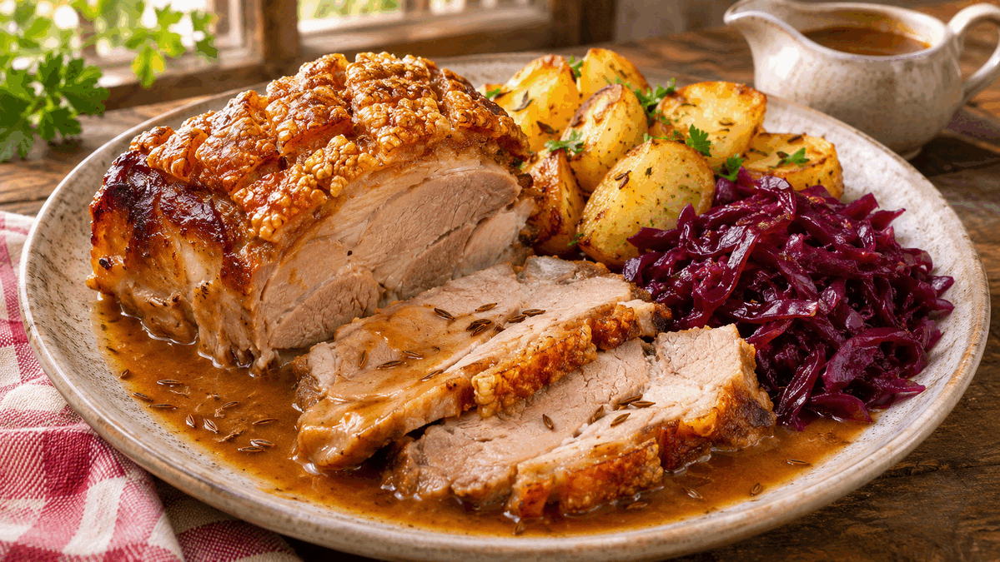
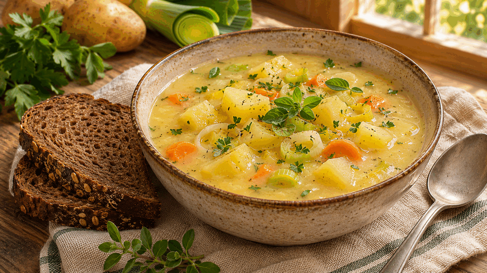

RECIPE COLLECTION
🇩🇪 Germany — German Classics
German comfort-food classics, from crisp schnitzel and sausages to slow braises, potato sides, and hearty soups.
15 recipes
No matching recipes yet. Try another recipe name, ingredient, cuisine, or tag.

Chicken
German-Style Chicken Schnitzel
Thin chicken cutlets with a crisp, airy crumb, bright lemon, and a simple pan-fried finish inspired by German schnitzel dinners.
Dinner
Traditional Wiener Schnitzel
A classic, very thin veal cutlet in a light golden crumb, served with lemon and parsley potatoes.

Pork
Jägerschnitzel with Mushroom Gravy
Crisp pork cutlets finished with a savory mushroom gravy for a hearty German-style dinner.

Pork
German Currywurst
Grilled bratwurst slices dressed in a tangy tomato curry sauce and finished with a dusting of curry powder.

Pork
German Bratwurst with Sauerkraut
Pan-seared bratwurst with gently braised sauerkraut, mustard, and a soft pretzel on the side.

Beef
German Sauerbraten
A vinegar-marinated German pot roast braised until tender with a balanced sweet-sour gravy.

Beef
German Beef Rouladen
Thin beef rolls with mustard, bacon, onion, and pickle, braised in a deep savory gravy.

Pork
German Schweinebraten
Slow-roasted pork with caraway, crackling, and a rich pan gravy for a classic German Sunday dinner.

Pork
German Schweinshaxe
A Bavarian-style roasted pork knuckle with crisp skin, tender meat, and a simple beer pan gravy.
Appetizer
German Kartoffelpuffer
Crisp German potato pancakes with tender centres, best served hot with applesauce or sour cream.

Appetizer
German Bratkartoffeln
Crisp skillet potatoes with caramelized onions, herbs, and optional bacon for an easy German side dish.

Salad
Warm German Potato Salad
Tender potatoes tossed warm with a bright mustard-vinegar dressing, onion, and fresh herbs.

Appetizer
Braised German Sauerkraut
Gently braised sauerkraut with apple, onion, and caraway for a mellow, savory German-style side.

Soup
Creamy German Potato Soup
A creamy potato and vegetable soup with leeks, carrots, herbs, and a comforting German home-cooking feel.

Soup
German Erbsensuppe
A thick, comforting German split pea soup with vegetables, marjoram, and optional smoked ham.